Tegnordbok, rutiner og øving
Tegn til tale for hjem, barnehage og skole: slå opp tegn tema for tema, øv med kort og bruk faste rutiner for måltid og morgen – også uten nett.
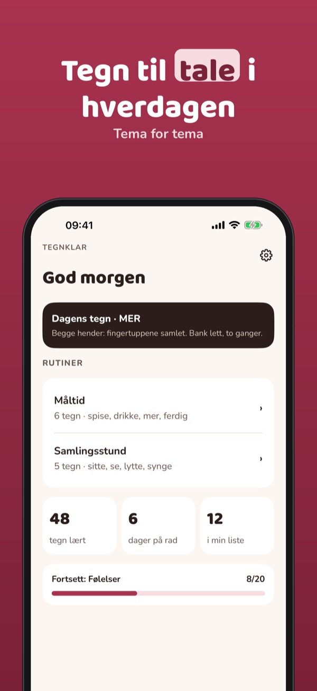
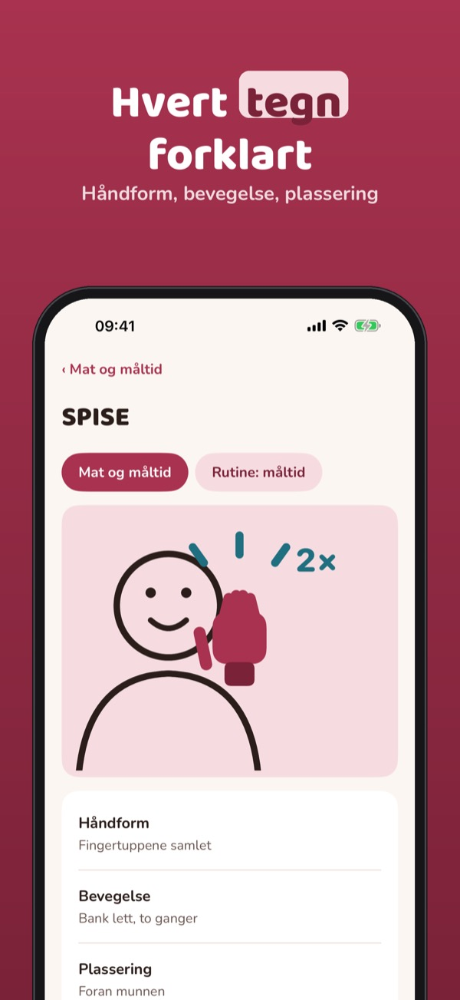
Tegnklar hjelper foreldre og ansatte i barnehage og skole å bruke tegn til tale i hverdagen: tegnordbok, rutiner, øvekort og plakater.
60 tegn i tre temaer, dagens tegn og to rutiner kan brukes uten kjøp. Fullversjonen er et engangskjøp som låser opp alle temaer, egne rutiner, plakater, øvekort og fremgang. Ikke abonnement.
Tegnklar er et hjelpemiddel for tegn til tale og erstatter ikke veiledning fra fagpersoner. Tegningene er våre egne og er ikke tilknyttet Statped eller andre.
Terms of Use (EULA): https://www.apple.com/legal/internet-services/itunes/dev/stdeula/
Privacy: https://baytechbv.github.io/privacy/tegnstotte-nordic/
Tegnordbog, rutiner og øvelse
Tegn til tale til hjem, børnehave og skole: slå tegn op tema for tema, øv med kort og brug faste rutiner til måltid og morgen – også uden internet.
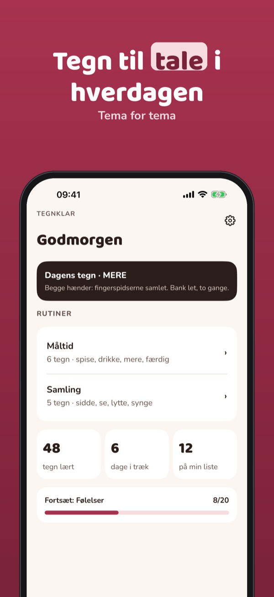
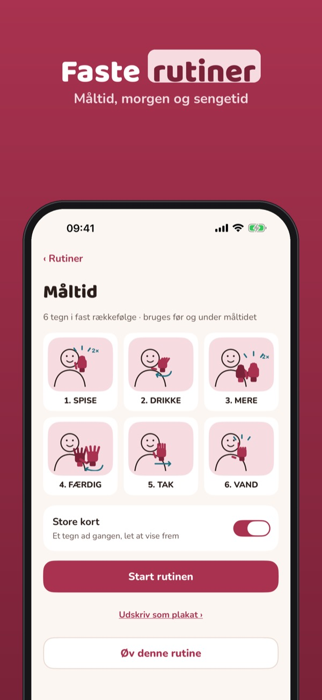
Tegnklar hjælper forældre og personale i dagtilbud og skole med at bruge tegn til tale i hverdagen: tegnordbog, rutiner, øvekort og plakater.
60 tegn i tre temaer, dagens tegn og to rutiner kan bruges uden køb. Den fulde version er et engangskøb, der låser alle temaer, egne rutiner, plakater, øvekort og fremskridt op. Intet abonnement.
Tegnklar er et hjælpemiddel til tegn til tale og erstatter ikke vejledning fra fagpersoner. Tegningerne er vores egne og ikke tilknyttet andre.
Terms of Use (EULA): https://www.apple.com/legal/internet-services/itunes/dev/stdeula/
Privacy: https://baytechbv.github.io/privacy/tegnstotte-nordic/
Viittomasanasto ja rutiinit
Tukiviittomat kotiin, päiväkotiin ja kouluun: hae viittomia teemoittain, harjoittele korteilla ja käytä rutiineja ateriaan ja aamuun – myös ilman nettiä.
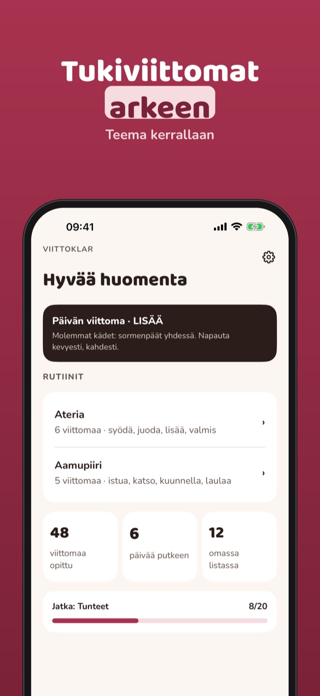
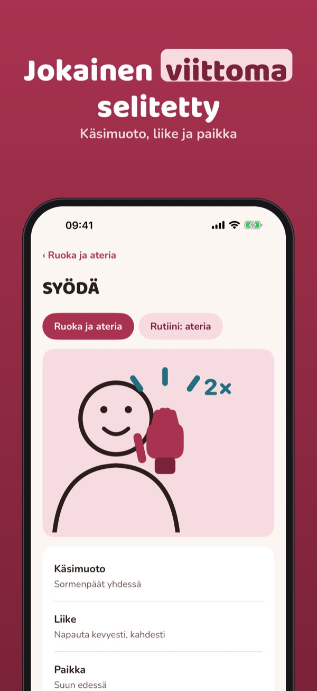
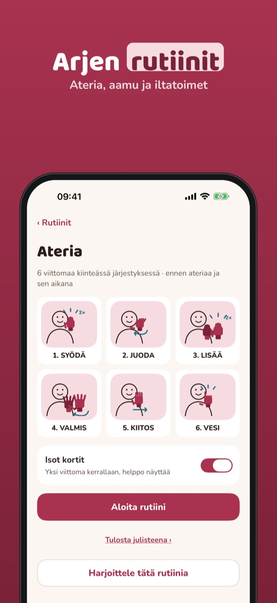
Viittoklar auttaa vanhempia sekä päiväkodin ja koulun henkilökuntaa käyttämään tukiviittomia arjessa: sanasto, rutiinit, harjoituskortit ja julisteet.
60 viittomaa kolmesta teemasta, päivän viittoma ja kaksi rutiinia ovat käytössä ilman ostoa. Täysi versio on kertaosto, joka avaa kaikki teemat, omat rutiinit, julisteet, harjoituskortit ja edistymisen. Ei tilausta.
Viittoklar on tukiviittomien apuväline eikä korvaa ammattilaisen ohjausta. Piirrokset ovat omiamme eivätkä liity muihin palveluihin.
Terms of Use (EULA): https://www.apple.com/legal/internet-services/itunes/dev/stdeula/
Privacy: https://baytechbv.github.io/privacy/tegnstotte-nordic/
Teckenordbok, rutiner, övning
Tecken som stöd för hem, förskola och skola: slå upp tecken tema för tema, öva med kort och använd fasta rutiner för måltid och morgon – även utan internet.
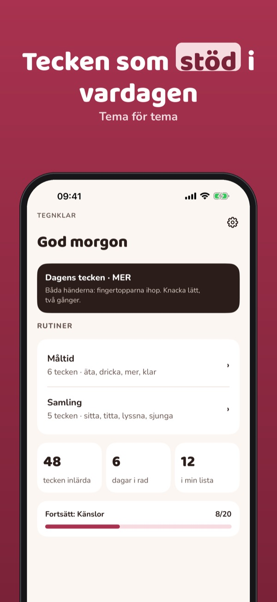
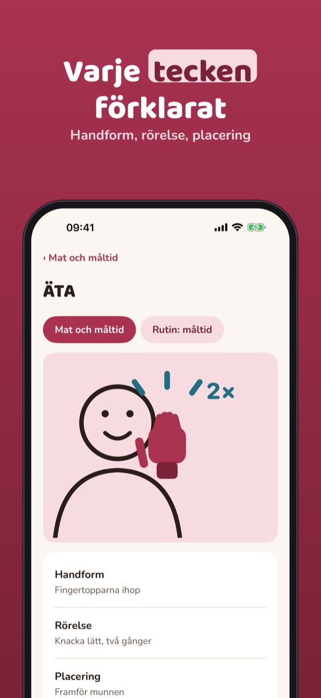
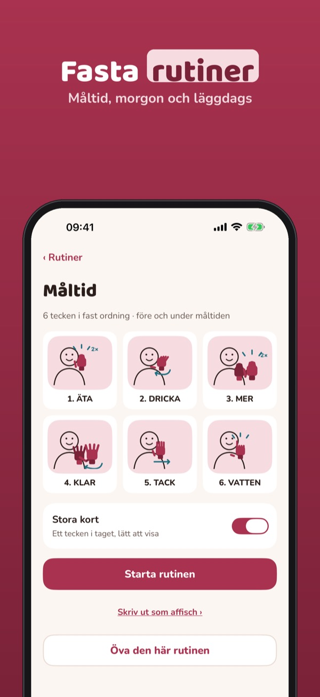
Tegnklar hjälper föräldrar och personal i förskola och skola att använda tecken som stöd i vardagen: teckenordbok, rutiner, övningskort och affischer.
60 tecken i tre teman, dagens tecken och två rutiner kan användas utan köp. Fullversionen är ett engångsköp som låser upp alla teman, egna rutiner, affischer, övningskort och framsteg. Ingen prenumeration.
Tegnklar är ett hjälpmedel för tecken som stöd och ersätter inte vägledning från fackpersoner. Teckningarna är våra egna och inte kopplade till andra.
Terms of Use (EULA): https://www.apple.com/legal/internet-services/itunes/dev/stdeula/
Privacy: https://baytechbv.github.io/privacy/tegnstotte-nordic/
Gebarenboek, routines, oefenen
Ondersteunende gebaren voor thuis, opvang en school: zoek gebaren per thema, oefen met kaarten en gebruik vaste routines voor eten en ochtend – ook offline.
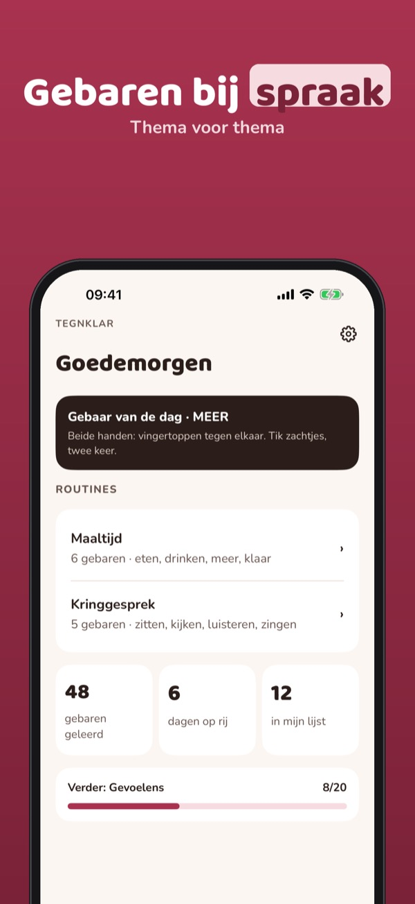
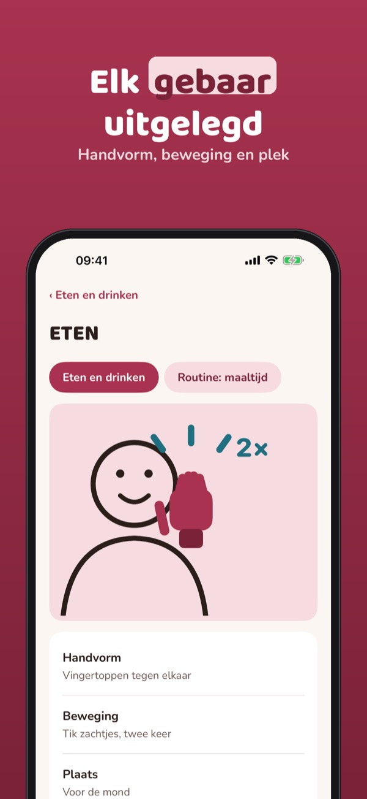
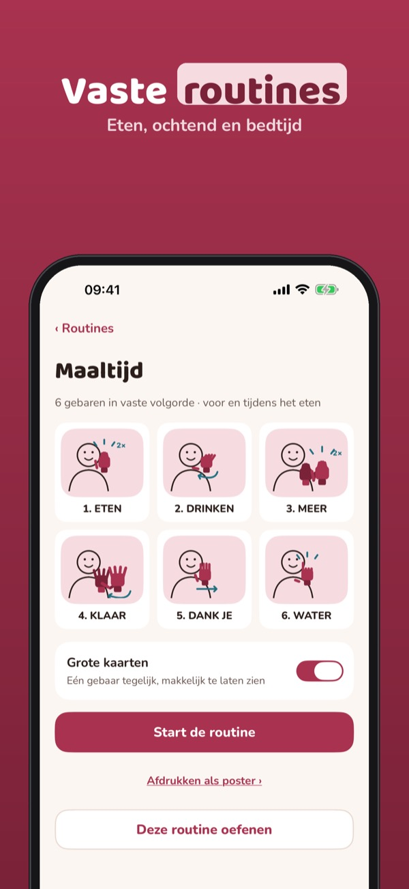
Tegnklar helpt ouders en medewerkers in opvang en onderwijs om gebaren ter ondersteuning van spraak te gebruiken: gebarenboek, routines, oefenkaarten en posters.
60 gebaren in drie thema’s, het gebaar van de dag en twee routines kun je zonder aankoop gebruiken. De volledige versie is een eenmalige aankoop voor alle thema’s, eigen routines, posters, oefenkaarten en voortgang. Geen abonnement.
Tegnklar is een hulpmiddel voor ondersteunende gebaren en vervangt geen begeleiding door professionals. De tekeningen zijn van onszelf.
Terms of Use (EULA): https://www.apple.com/legal/internet-services/itunes/dev/stdeula/
Privacy: https://baytechbv.github.io/privacy/tegnstotte-nordic/